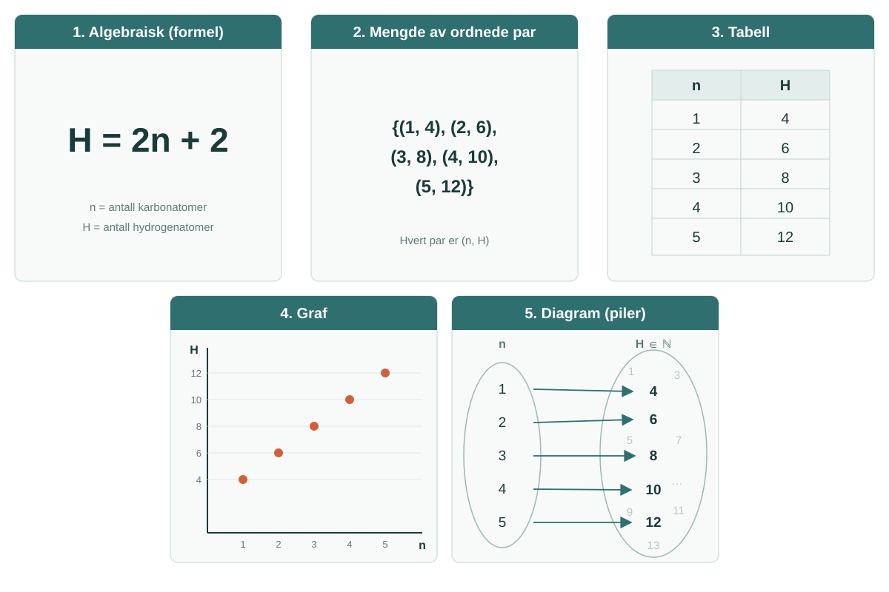
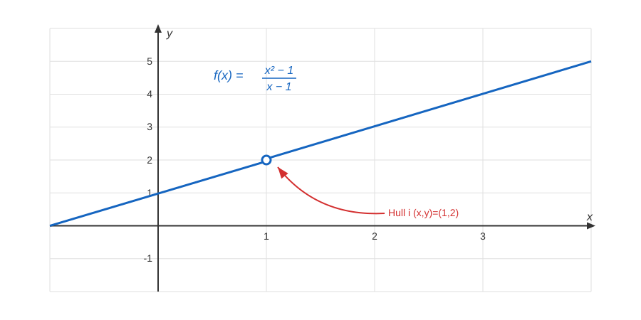
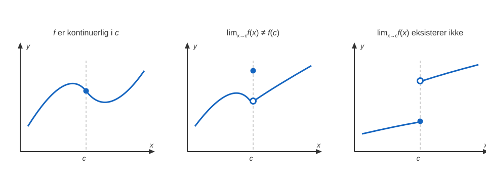
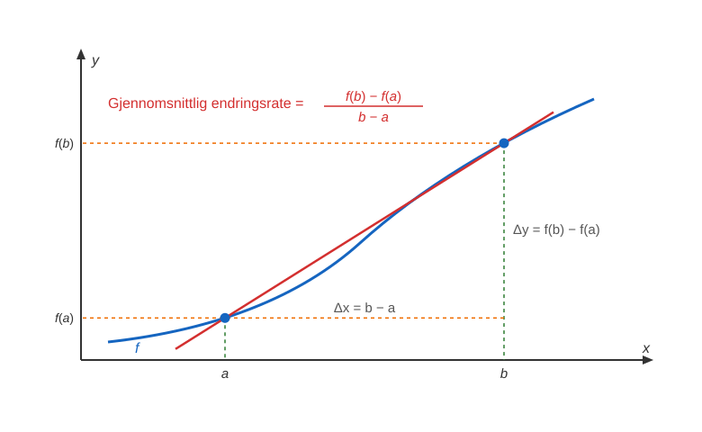
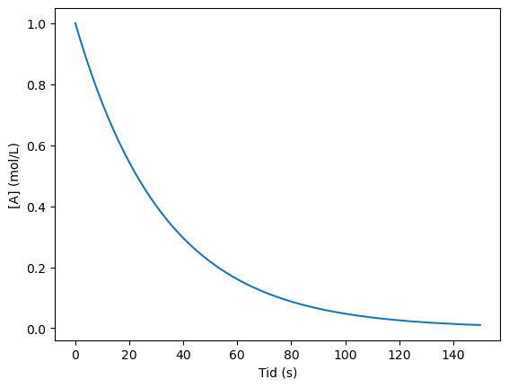

4. Funksjoner, derivasjon og integrasjon#
Der de to foregående delene handlet om usikkerhet og telling, handler kalkulus om endring. Hvor raskt stiger temperaturen? Hvor mye arbeid utføres når en gass utvider seg? Hvordan finner vi det punktet der energien er lavest?
Kalkulus gir oss to verktøy som svarer på hver sin side av dette. Derivasjon måler hvor raskt noe endrer seg akkurat nå, og integrasjon summerer opp mange små bidrag til en helhet. Det som gjør kalkulus til noe mer enn to regneteknikker, er at disse to viser seg å være hverandres motsatte.
For en kjemiker er kalkulus arbeidsspråket i store deler av faget. Reaksjonskinetikk handler om den deriverte av konsentrasjon med hensyn på tid. Termodynamikk er full av partiellderiverte som \(\left(\frac{\partial P}{\partial T}\right)_V\), der vi spør hvordan én størrelse endrer seg mens andre holdes fast. Arbeidet en gass utfører er et integral, \(W=-\int P\,dV\), og normaliseringen av en orbital er et trippelintegral over hele rommet.
4.1 Funksjoner#
Allerede i 1.2 Mengdelære gjennomgikk vi mengder, og nå skal vi se på hvordan funksjoner knytter to eller samme mengde sammen. Funksjoner i matematikk er regler som forbinder hvert eneste tall i en mengde med ett og bare ett tall i en annen eller samme mengde. Du er allerede kjent med flere funksjoner, som for eksempel funksjonen for arealet av en sirkel gitt dens radius, pH-en til en løsning gitt dens syrekonsentrasjon eller antall H-atomer i et alkan gitt antallet C-atomer.
Eksempel
For et alkan med et heltall \(n\) antall C-atomer, er antallet H-atomer \(H\) gitt ved funksjonen
\(H=2n+2\)
Dette er en funksjon fordi for hver \(n\) får vi nøyaktig én \(H\). Vi kan også skrive \(H(n)\) for \(H\) for å spesifisere at \(H\) er en funksjon av \(n\):
\(H(n)=2n+2\)
4.1.1 Funksjon, definisjonmengde og verdiområde#
Som du nå ser kan funksjoner brukes til å si noe om hvordan en størrelse varierer med en annen størrelse. Derfor er det naturlig å finne ut nøyaktig hva vi kan si om disse såkalte funksjonene. Vi begynner med definisjonen av en funksjon, og dens definisjonsmengde og verdiområde.
Def. 4.1 - Funksjon av én variabel
Intuitivt: En funksjon \(f\) er en regel som tildeler hver verdi \(x\) nøyaktig én verdi \(f(x)\).
Matematisk: La \(X\) og \(Y\) være to mengder. En funksjon \(f\) fra \(X\) til \(Y\), tildeler hvert element \(x \in X\) nøyaktig ett element i \(Y\), \(f(x)\).
Vi bruker følgende notasjon:
\(f:X \rightarrow Y\)
Def. 4.2 - Definisjonsmengde og verdiområde
La \(f:X \to Y\) være en funksjon fra \(X\) til \(Y\). Da kalles \(X\) for definisjonsmengden til \(f\), mens \(Y\) kalles for verdiområdet.
Eksempel
La \(H:\{1,2,3,4,5\} \to N\) være funksjonen for antallet H-atomer \(H(n)\) i et alkan med \(n\)-antall C-atomer, gitt ved
\(H(n)=2n+2\)
a) Hva er definisjonsområdet til \(H\)?
Definisjonsmengden er \(\{1,2,3,4,5\}\) og sier noe om hvilke \(n\)-verdier vi ser på. Merk at dette er en diskret definisjonsmengde fordi vi ikke har alle tallene mellom \(1\) og \(5\), men spesifikt \(1,2,3,4\) eller \(5\). Med andre ord ser vi på metan, etan, propan, butan og pentan.
b) Hva er verdiområdet til \(H\)?
Verdiområdet er \(N\), altså de naturlige tallene. Det betyr at antallet H-atomer \(H(n)\) er et naturlig tall.
4.1.2 Representasjon av funksjoner#
Vi er ferdig med første steg, nemlig definisjonen av en funksjon. Allerede nå har vi fått to nye begreper å beskrive funksjoner med - definisjonsmengde og verdiområde. Før vi går videre, skal vi se på noen måter å representere funksjoner på. Du er allerede kjent med grafer og algebraisk representasjon (formelen for funksjonen). Det er i hovedsak disse representasjonene som er mest relevante for deg som kjemistudent, men det finnes også flere!

Underveisoppgave 4.1
En rett sylinder har en fast høyde på \(10\) cm. Volumet \(V\) (i cm³) avhenger av radien \(r\) (i cm) gjennom \(V(r)=10 \cdot \pi r^2\).
a) Forklar hvorfor \(V\) er en funksjon av \(r\).
b) Hva er en naturlig definisjonsmengde for \(V(r)\) når vi tenker på en fysisk sylinder?
c) Regn ut \(V(2)\).
Løsning 4.1
a) \(V\) er en funksjon av \(r\) fordi hver verdi av radien \(r\) gir nøyaktig én verdi av volumet \(V\). Dette er nettopp kravet fra Def. 4.1.
b) Radien til en fysisk sylinder må være positiv, så en naturlig definisjonsmengde er alle positive reelle tall, altså \(r>0\). (Vi kan eventuelt ta med \(r=0\) om vi tillater en “sylinder” uten utstrekning, men da blir volumet \(0\)).
c) Vi setter inn \(r=2\): \(V(2)=10 \cdot \pi \cdot 2^2 = 40\pi \approx 125{,}7\) cm³.
4.2 Jevne og odde funksjoner#
To viktige typer funksjoner du kan komme på å møte i fysikalsk kjemi er jevne og odde funksjoner.
Def. 4.3 - Jevne og odde funksjoner
Anta at \(f\) er definert ved både \(x\) og \(-x\).
Vi kaller \(f\) for en jevn funksjon hvis
\(f(-x)=f(x)\) for alle \(x\) i definisjonsområdet til \(f\).
Vi kaller \(f\) for en odde funksjon hvis
\(f(-x)=-f(x)\) for alle \(x\) i definisjonsområdet til \(f\).
Eksempel
Vis at \(f(x)=x^2\) er en jevn funksjon.
Vi vet at \(f\) er definert for alle reelle tall.
La \(x\) være et vilkårlig tall i definisjonsområdet til \(f\), altså \(x \in R\). Da blir
\(f(x)=x^2\)
Samtidig blir
\(f(-x)=(-x)^2=x^2\)
Altså har vi vist at \(f(x)=f(-x)\), og \(f\) er en jevn funksjon.
Eksempel
Vis at \(f(x)=x^3-2x\) er en odde funksjon.
Vi vet at \(f\) er definert for alle reelle tall.
La \(x\) være et vilkårlig tall i definisjonsområdet til \(f\), altså \(x \in R\). Da blir
\(f(x)=x^3-2x\)
Samtidig blir
\(f(-x)=(-x)^3-2(-x)=-x^3+2x=-(x^3-2x)\)
Altså har vi vist at \(f(x)=-f(x)\), og \(f\) er en odde funksjon.
OBS
En funksjon må ikke være enten jevn eller odde, den kan være ingen av delene.
Det er derimot mye enklere å forstå hva jevne og odde funksjoner er ved å visualisere dem, fordi egenskapene beskrevet ovenfor gir opphav til en symmetri. Jevne funksjoner er symmetriske om \(y\)-aksen, mens odde funksjoner er symmetriske om origo. Nedenfor får du eksempel på en jevn og en odde funksjon, og kan endre \(x\)-verdiene for å se hvordan \(f(x)\) og \(f(-x)\) endrer seg.
Underveisoppgave 4.2
Avgjør om hver av funksjonene er jevn, odde, eller ingen av delene. Begrunn svaret ved å regne ut \(f(-x)\).
a) \(f(x)=x^4-3x^2\)
b) \(f(x)=x^3+x\)
c) \(f(x)=x^2+x\)
Løsning 4.2
a) \(f(-x)=(-x)^4-3(-x)^2=x^4-3x^2=f(x)\). Siden \(f(-x)=f(x)\), er \(f\) jevn.
b) \(f(-x)=(-x)^3+(-x)=-x^3-x=-(x^3+x)=-f(x)\). Siden \(f(-x)=-f(x)\), er \(f\) odde.
c) \(f(-x)=(-x)^2+(-x)=x^2-x\). Dette er verken lik \(f(x)=x^2+x\) eller lik \(-f(x)=-x^2-x\). Funksjonen er derfor hverken jevn eller odde, akkurat som advarselen etter Def. 4.3 påpeker.
4.3 Grenseverdier og kontinuitet#
Vi bygger videre på funksjoner ved å introdusere grenseverdier, og dereter kontinuitet. Dette er to konsepter som blir svært sentrale i derivasjon og integrasjon senere!
4.3.1 Grenseverdier#
Vi innleder grenseverdier med et eksempel.
Eksempel
Beskriv funksjonen \(f(x)=\frac{x^2-1}{x-1}\) omkring \(x=1\).
La oss se hva vi kan si om definisjonsmengden til \(f\), altså hvilke \(x\)-verdier vi kan ha. Annet enn \(x=1\) som gir \(0\) i nevneren, er alle reelle \(x\)-verdier tillate. Verdiområdet er de reelle tallene.
Et observant øye ser at det er mulig å faktorisere uttrykket, slik at:
\(f(x)=\frac{x^2-1}{x-1}=\frac{(x-1)(x+1)}{(x-1)}=x+1\) for \(x\neq1\)
Grafen til \(f\) blir dermed linjen \(y=x+1\) uten punktet i \((1,2)\), der blir det et hull! Selv om \(f(1)\) ikke er definert, kan vi få \(f(x)\) så nærme vi vil \(2\) ved å velge en \(x\) nærme nok \(1\). Vi sier at \(f(x)\) går mot grenseverdien \(2\) når \(x\) går mot \(1\). Notasjonen for dette er:
\(\lim_{x \to 1} f(x)=2\)
eller
\(\lim_{x \to 1} \frac{x^2-1}{x-1} = 2\)

Den formelle definisjonen av grenseverdi er komplisert, og muligens kjent for deg som har hatt MAT1100. Vi går for å presentere den uformelle definisjonen i stedet, da detaljene ikke er særlig viktig for oss.
Def. 4.4 - Grenseverdi (uformelt)
La \(f\) være en funksjon og \(L\) et tall. Hvis \(f(x) \to L\) når \(x \to a\), kaller vi \(L\) for grenseverdien til \(f(x)\) når \(x\) går mot \(a\). Vi skriver:
\(\lim_{x \to a} f(x) = L\)
4.3.2 Kontinuitet#
Vi har nå nok verktøy til å gå løs på kontinuitet. Heldigvis har kontinuitet en veldig intuitiv forklaring: hvis du kan tegne grafen til en funksjon fra start til slutt uten å måtte løfte pennen din av papiret, vel da er den kontinuerlig. Men, matematikken er formell og vi må ha klare og tydelige definisjoner.
Def. 4.5 - Kontinuitiet i et punkt
Vi sier at funksjonen \(f\) er kontinuerlig i et punkt \(c\) i definisjonsområdet hvis
\(\lim_{x \to c} f(x) = f(c)\)
Hvis
\(\lim_{x \to c} f(x)\) ikke eksisterer
eller \(\lim_{x \to c} f(x) \neq f(c)\)
så er \(f\) diskontinuerlig i \(c\).

Def. 4.6 - Kontinuitiet i et intervall
Vi sier at funksjonen \(f\) er kontinuerlig på intervallet \(I\) hvis den er kontinuerlig i hver at punktene i \(I\).
Def. 4.7 - Kontinuerlig funksjon
Vi sier at funksjonen \(f\) er kontinuerlig (på hele definisjonsområdet) hvis den er kontinuerlig i hvert at punktene i definisjonsområdet.
Underveisoppgave 4.3
a) Regn ut grenseverdien \(\lim_{x \to 2} \dfrac{x^2-4}{x-2}\) ved å faktorisere telleren.
b) Funksjonen \(g\) er definert ved \(g(x)=\dfrac{x^2-4}{x-2}\) for \(x \neq 2\), og \(g(2)=3\). Er \(g\) kontinuerlig i \(x=2\)? Begrunn med Def. 4.5.
Løsning 4.3
a) Vi faktoriserer telleren: \(x^2-4=(x-2)(x+2)\). For \(x \neq 2\) er da
\(\frac{x^2-4}{x-2}=\frac{(x-2)(x+2)}{x-2}=x+2\)
slik at \(\lim_{x \to 2} \dfrac{x^2-4}{x-2}=\lim_{x \to 2}(x+2)=4\).
b) For at \(g\) skal være kontinuerlig i \(x=2\), må \(\lim_{x \to 2} g(x)=g(2)\). Vi fant at grenseverdien er \(4\), men \(g(2)=3\). Siden \(\lim_{x \to 2} g(x)=4 \neq 3=g(2)\), er \(g\) diskontinuerlig i \(x=2\). (Hadde vi i stedet satt \(g(2)=4\), ville funksjonen vært kontinuerlig.)
4.4 Derivasjon#
Derivasjon er et matematisk verktøy for å sette ord på noe du sannsynligvis allerede ser på grafen til en funksjon. Følger du en graf, kan du for eksempel observere at den stiger, når et toppunkt, synker litt og kanskje treffer et bunnpunkt. Husk at en av hovedgrunnene til at vi interesserer oss for funksjoner er at de kan modellere virkelige fenomener og sammenhengen mellom to størrelser. Ofte er vi derfor interessert i hvordan denne sammenhengen endrer seg, hvor mye den endrer seg, og i hvilken retning.
4.4.1 Gjennomsnittlig endringsrate#
Tenk deg at du går hjem fra skolen og når du er hjemme ser du at du har brukt \(60 \text{ min}\). Du gikk totalt \(6 \text{ km}\). Først og fremst er du veldig fornøyd med innsatsen, og kan regne ut at gjennomsnittsfarten din var \(\frac{6 \text{ km}}{1 \text{ time}} = 6 \text{ km}/\text{t}\). Dette er et eksempel på den gjennomsnittlige endringsraten mellom to punkter.
Def. 4.8 - Gjennomsnittlig endringsrate mellom to punkter
Den gjennomsnittlige endringsraten til en funksjon \(f\) over et intervall \([a,b]\) er gitt ved
\(\frac{\Delta y}{\Delta x}=\frac{f(b)-f(a)}{b-a}\)

En rett linje som går gjennom to punkter, slik som den rette linjen som går gjennom \((a,f(a))\) og \((b,f(b))\), kalles en sekant. Den gjennomsnittlige endringsraten mellom disse to punktene er da stigningstallet til sekanten.
Eksempel
Hva er den gjennomsnittlige endringsraten for funksjonen \(f(x)=x^2+1\) i intervallet \([1,3]\)?
Vi har at
\(f(1)=1^2+1=2\)
\(f(3)=3^2+1=10\)
Dermed får vi
\(\frac{\Delta y}{\Delta x}=\frac{10-2}{3-1}=\frac{8}{2}=4\)
4.4.2 Definisjonen av den deriverte#
I eksempelet over så vi at du gikk på en gjennomsnittsfart på \(6 \text{ km}/\text{t}\), men det betyr ikke nødvendigvis at du gikk i den farten hele turen. Kanskje stoppet du opp for å klappe en katt, og da gikk jo farten ned, og kanskje du gikk raskere noen steder. Vi spør oss - hva er endringsraten i ett enkelt punkt, som for eksempel på et spesifikt sted på veien? Det er nettopp dette derivasjon handler om - endringen i funksjonsverdien i spesifikke punkter. Ved å minimere avstanden mellom to punkter, kan vi komme så nærme punktet vi er interessert i og kun se på gjennomsnittlig endringsrate der. Vi introduserer definisjonen av den deriverte.
Def. 4.9 - Den deriverte
Den deriverte til en funksjon \(f\) er en annen funksjon \(f'\) definert ved
\(f'(x)=\lim_{h \to 0} \frac{f(x+h)-f(x)}{h}\)
for alle \(x\) der grenseverdien eksisterer.
Hvis \(f'(x)\) eksisterer, sier vi at \(f\) er deriverbar i \(x\).
Eksempel
Bruk definisjonen til å finne den deriverte av \(f(x)=x^2\).
Vi setter inn i definisjonen:
\(f'(x)=\lim_{h \to 0} \frac{f(x+h)-f(x)}{h}=\lim_{h \to 0} \frac{(x+h)^2-x^2}{h}\)
Vi regner ut telleren:
\((x+h)^2-x^2=x^2+2xh+h^2-x^2=2xh+h^2\)
Dermed får vi
\(f'(x)=\lim_{h \to 0} \frac{2xh+h^2}{h}=\lim_{h \to 0} (2x+h)=2x\)
Eksempel
Bruk definisjonen til å finne den deriverte av \(f(x)=x^2-3x\).
Vi setter inn i definisjonen:
\(f'(x)=\lim_{h \to 0} \frac{f(x+h)-f(x)}{h}=\lim_{h \to 0} \frac{\left[(x+h)^2-3(x+h)\right]-\left[x^2-3x\right]}{h}\)
Vi regner ut telleren:
\((x+h)^2-3(x+h)-x^2+3x=x^2+2xh+h^2-3x-3h-x^2+3x=2xh+h^2-3h\)
Dermed får vi
\(f'(x)=\lim_{h \to 0} \frac{2xh+h^2-3h}{h}=\lim_{h \to 0} (2x+h-3)=2x-3\)
Definisjonen av den deriverte er ikke akkurat lett fordøyelig. Vi har punktene \((x, f(x))\) og tar et steg \(h\) fra \(x\) til punktet \((x+h, f(x+h))\). Så gjør vi \(h\) mindre og mindre - vi finner altså grenseverdien av den gjennomsnittlige endringsraten mellom disse punktene når \(h\) går mot \(0\). Nedenfor kan du endre på \(x\) og \(h\) og se hvordan den gjennomsnittlige endringsraten og den deriverte endrer seg. Se spesielt på hva som skjer når \(h\) går mot \(0\).
For å få en enda bedre forståelse for hva den deriverte er, se hvordan verdien til den deriverte endrer seg i simulasjonen nedenfor når vi følger grafen fra mindre til større \(x\)-verdier. Hva skjer med den deriverte ved topp-og bunnpunktene?
4.4.3 Ekstremalpunkter#
Ekstremalpunkter er enkelt forklart de minste eller største punktene på grafen til en funksjon. Vi skiller mellom minimumspunkter og maksimumspunkter.
Def. 4.10 - Minimumspunkt
Et punkt \(a\) er et lokalt minimumspunkt for en funksjon \(f\) dersom
\(f(a) \leq f(x)\)
i en omegn om \(a\).
Et punkt \(a\) er et globalt minimumspunkt for en funksjon \(f\) dersom
\(f(a) \leq f(x)\)
for alle \(x\) i definisjonsmengden til \(f\).
Def. 4.11 - Maksimumspunkt
Et punkt \(a\) er et lokalt maksimumspunkt for en funksjon \(f\) dersom
\(f(a) \ge f(x)\)
i en omegn om \(a\).
Et punkt \(a\) er et globalt maksimumspunkt for en funksjon \(f\) dersom
\(f(a) \ge f(x)\)
for alle \(x\) i definisjonsmengden til \(f\).
Som vi så i simulasjonen over, er tangenten i et ekstremalpunkt en horisontal rett linje - den har ingen stigning, og den deriverte er null.
Teorem 4.1 - Den deriverte i et ekstremalpunkt
Dersom \(f\) har et lokalt ekstremalpunkt (maksimum eller minimum) i et indre punkt \(a\), og \(f\) er deriverbar der, så er
\(f'(a) = 0\)
Vi kan altså finne ekstremalpunkter ved å derivere funksjonen, og finne punktet/punktene der den deriverte er lik null!
4.4.4 Høyere-ordens deriverte#
Vi har funnet den første-deriverte til \(f\), men det er ingenting som stopper oss fra å finne høyere-ordens deriverte slik som den dobbelderiverte, tredje deriverte osv.
Def. 4.12 - Høyere-ordens deriverte (n-te deriverte)
Den \(n\)-te deriverte til en funksjon \(f\) er en annen funksjon \(f^{(n)}\) definert ved å ta den deriverte av \(f\) \(n\)-antall ganger.
Kobling til fysikalsk kjemi
I kjemi som i fysikk er posisjon, fart og akselerasjon knyttet sammen gjennom derivasjon. La \(x(t)\) være posisjonen til en partikkel ved tid \(t\), og anta at funksjonen er dobbeltderiverbar. Da er \(v(t) = x'(t)\) farten til partikkelen ved tid \(t\), og \(a(t) = v'(t) = x''(t)\) akselerasjonen til partikkelen ved tid \(t\). Med andre ord ser vi først på posisjon, deretter på endring i posisijon som er fart, og til slutt endringen i fart som er akselerasjon.
4.4.5 De deriverte til kjente funksjoner#
Nå som vi har en idé av hva den deriverte er, skal vi lære oss å finne de deriverte for ulike funksjoner. I et av eksemplene ovenfor finner vi \(f'\) for \(f(x)=x^2\) direkte ut ifra definisjonen av den deriverte. Heldigvis for oss har mange flinke matematikere funnet ut av de deriverte for de vanligste, elementære funksjonene. De aller vanligste er gitt i tabellen nedenfor.
\(f(x)\) |
\(f'(x)\) |
Betingelser |
|---|---|---|
\(a\) |
\(0\) |
|
\(x^a\) |
\(ax^{a-1}\) |
|
\(e^x\) |
\(e^x\) |
|
\(a^x\) |
\(a^x \ln{(a)}\) |
\(a>0\) |
\(\ln{(x)}\) |
\(\frac{1}{x}\) |
\(x>0\) |
\(\log_{a}{(x)}\) |
\(\frac{1}{x \ln{(a)}}\) |
\(x,a>0\) |
\(\sin{(x)}\) |
\(\cos{(x)}\) |
|
\(\cos{(x)}\) |
\(-\sin{(x)}\) |
|
\(\tan{(x)}\) |
\(\sec^2{(x)}=\frac{1}{\cos^2{(x)}}=1+\tan^2{(x)}\) |
|
\(\arcsin{(x)}\) |
\(\frac{1}{\sqrt{1-x^2}}\) |
\(-1 < x < 1\) |
\(\arccos{(x)}\) |
-\(\frac{1}{\sqrt{1-x^2}}\) |
\(-1 < x < 1\) |
\(\arctan{(x)}\) |
\(\frac{1}{1+x^2}\) |
4.4.6 Derivasjonsregler#
For å finne de deriverte til sammensatte og mer kompliserte funksjoner, må vi ha noen derivasjonsregler. Først introduseres litt notasjon for å unngå forvirring!
Lagrange |
Leipniz |
|---|---|
\(f'(x)\) |
\(\frac{df}{dx}\) |
\(f''(x)\) |
\(\frac{d^2f}{dx^2}\) |
\(f'''(x)\) |
\(\frac{d^3f}{dx^3}\) |
\(f^{(n)}(x)\) |
\(\frac{d^nf}{dx^n}\) |
Videre presenteres de ulike derivasjonsreglene.
Teorem 4.2 - Faktorregelen
La \(g\) være en deriverbar funksjon i \(x\) og la \(a\) være et tall. Da er
\(\frac{d}{dx} [a \cdot g(x)]=a \cdot g'(x)\)
Teorem 4.3 - Summeregelen
La funksjonene \(g\) og \(h\) er deriverbare i \(x\). Da er
\(\frac{d}{dx} [g(x) + h(x)]=g'(x) + h'(x)\)
Teorem 4.4 - Produktregelen
La funksjonene \(g\) og \(h\) er deriverbare i \(x\). Da er
\(\frac{d}{dx} [g(x) \cdot h(x)]=g'(x)h(x)+g(x)h'(x)\)
Teorem 4.5 - Kvotientregelen
La funksjonene \(g\) og \(h\) er deriverbare i \(x\). Da er
\(\frac{d}{dx} [\frac{g(x)}{h(x)}]=\frac{g'(x)h(x)-g(x)h'(x)}{h(x)^2}\)
Teorem 4.6 - Kjerneregelen
La funksjonene \(g\) og \(h\) er deriverbare i \(x\). Da er
\(\frac{d}{dx} [(g \circ h)(x)]=(g(h(x)))'=g(h(x)) \cdot h'(x)\)
Derivasjon av funksjoner er mengdetrening. Prøv å forstå alle eksemplene nedenfor.
Eksempel 1
Deriver \(f(x)=7x^4\).
Vi kan faktorisere \(7\) ut ved faktorregelen, og bruker potensregelen på \(x^4\), slik at
\(f'(x)=7 \cdot \frac{d}{dx}\left(x^4\right)=7 \cdot 4x^3=28x^3\)
Eksempel 2
Deriver \(f(x)=x^3+\sin{(x)}\).
Ved summeregelen deriverer vi hvert ledd for seg, slik at
\(f'(x)=\frac{d}{dx}\left(x^3\right)+\frac{d}{dx}\left(\sin{(x)}\right)=3x^2+\cos{(x)}\)
Eksempel 3
Deriver \(f(x)=4x^2+3e^x-5\ln{(x)}\).
Vi bruker summeregelen på leddene og faktorregelen på hver konstant:
\(f'(x)=4 \cdot 2x+3 \cdot e^x-5 \cdot \frac{1}{x}=8x+3e^x-\frac{5}{x}\)
Eksempel 4
Deriver \(f(x)=x^2\sin{(x)}\).
Dette er et produkt av \(x^2\) og \(\sin{(x)}\), så vi bruker produktregelen:
\(f'(x)=2x\sin{(x)}+x^2\cos{(x)}\)
Eksempel 5
Deriver \(f(x)=e^x\cos{(x)}\).
Vi bruker produktregelen, og husker at \(e^x\) er sin egen deriverte, slik at
\(f'(x)=e^x\cos{(x)}+e^x\cdot(-\sin{(x)})=e^x\left(\cos{(x)}-\sin{(x)}\right)\)
Eksempel 6
Deriver \(f(x)=\dfrac{x}{\cos{(x)}}\).
Dette er en kvotient med teller \(x\) og nevner \(\cos{(x)}\), så vi bruker kvotientregelen, slik at
\(f'(x)=\frac{1\cdot\cos{(x)}-x\cdot(-\sin{(x)})}{\cos^2{(x)}}=\frac{\cos{(x)}+x\sin{(x)}}{\cos^2{(x)}}\)
Eksempel 7
Deriver \(f(x)=\dfrac{\ln{(x)}}{x^2}\).
Vi bruker kvotientregelen med teller \(\ln{(x)}\) og nevner \(x^2\), slik at
\(f'(x)=\frac{\frac{1}{x}\cdot x^2-\ln{(x)}\cdot 2x}{\left(x^2\right)^2}=\frac{x-2x\ln{(x)}}{x^4}=\frac{1-2\ln{(x)}}{x^3}\)
Eksempel 8
Deriver \(f(x)=\sin{(x^2)}\).
La \(g(x)=\sin{(x)}\) være den ytre funksjonen og \(h(x)=x^2\) være den indre funksjonen. Vi har at
\(g'(x)=\cos{(x)}\)
\(h'(x)=2x\)
Ved kjerneregelen får vi derfor
\(f'(x)=g'(h(x)) \cdot h'(x)=\cos{(x^2)} \cdot 2x=2x\cos{(x^2)}\)
Eksempel 9
Deriver \(f(x)=e^{3x}\).
La \(g(x)=e^{x}\) være den ytre funksjonen og \(h(x)=3x\) være den indre funksjonen. Vi har at
\(g'(x)=e^{x}\)
\(h'(x)=3\)
Ved kjerneregelen får vi derfor
\(f'(x)=g'(h(x)) \cdot h'(x)=e^{3x} \cdot 3=3e^{3x}\)
Eksempel 10
Deriver \(f(x)=x \cdot \ln{(x^2+1)}\).
Dette er et produkt av \(u(x)=x\) og \(v(x)=\ln{(x^2+1)}\), så vi bruker produktregelen. Først deriverer vi hver faktor.
For \(u(x)=x\) har vi
\(u'(x)=1\)
Faktoren \(v(x)=\ln{(x^2+1)}\) deriverer vi med kjerneregelen. La \(g(x)=\ln{(x)}\) være den ytre funksjonen og \(h(x)=x^2+1\) være den indre funksjonen. Vi har at
\(g'(x)=\frac{1}{x}\)
\(h'(x)=2x\)
slik at
\(v'(x)=g'(h(x)) \cdot h'(x)=\frac{1}{x^2+1} \cdot 2x=\frac{2x}{x^2+1}\)
Ved produktregelen får vi derfor
\(f'(x)=u'(x)v(x)+u(x)v'(x)=1 \cdot \ln{(x^2+1)}+x \cdot \frac{2x}{x^2+1}=\ln{(x^2+1)}+\frac{2x^2}{x^2+1}\)
Underveisoppgave 4.4
a) Regn ut den gjennomsnittlige endringsraten til \(f(x)=x^2\) over intervallet \([1,4]\).
b) Bruk definisjonen av den deriverte (Def. 4.9) til å vise at \(f(x)=x^2+x\) har \(f'(x)=2x+1\).
c) Deriver \(f(x)=x^3\cos{(x)}\).
d) Deriver \(f(x)=(2x+1)^5\).
Løsning 4.4
a) Vi bruker definisjonen av endringsrate (Def. 4.8) med \(a=1\) og \(b=4\):
\(\frac{\Delta y}{\Delta x}=\frac{f(4)-f(1)}{4-1}=\frac{16-1}{3}=\frac{15}{3}=5\)
b) Vi setter inn i definisjonen:
\(f'(x)=\lim_{h \to 0}\frac{f(x+h)-f(x)}{h}=\lim_{h \to 0}\frac{\left[(x+h)^2+(x+h)\right]-\left[x^2+x\right]}{h}\)
Vi regner ut telleren: \((x+h)^2+(x+h)-x^2-x=x^2+2xh+h^2+x+h-x^2-x=2xh+h^2+h\). Dermed er
\(f'(x)=\lim_{h \to 0}\frac{2xh+h^2+h}{h}=\lim_{h \to 0}(2x+h+1)=2x+1\)
c) Med \(g(x)=x^3\) og \(h(x)=\cos{(x)}\) gir produktregelen
\(f'(x)=3x^2\cos{(x)}+x^3\cdot(-\sin{(x)})=3x^2\cos{(x)}-x^3\sin{(x)}\)
d) La \(g(x)=x^5\) være den ytre funksjonen og \(h(x)=2x+1\) være den indre funksjonen. Da er \(g'(x)=5x^4\) og \(h'(x)=2\), slik at
\(f'(x)=g'(h(x)) \cdot h'(x)=5(2x+1)^4 \cdot 2=10(2x+1)^4\)
4.5 Integrasjon#
Vi har til nå sett på derivasjon, som handler om endring: gitt en funksjon \(f\), finner vi den momentane endringsraten \(f'\). Integrasjon er på mange måter den motsatte operasjonen. I stedet for å spørre “hvor raskt endrer \(f\) seg?”, spør vi “hvor mye har \(f\) samlet seg opp?”. Vi skal se at integrasjon svarer på to spørsmål som i utgangspunktet virker helt ulike - arealet under en graf, og det å reversere en derivasjon - og at disse to henger tett sammen.
4.5.1 Den antideriverte#
Vi starter med å reversere derivasjon. Vi har sett at å derivere \(F(x)=x^2\) gir \(f(x)=2x\). Men kan vi gå fra \(f(x)=2x\) tilbake til \(F(x)=x^2\)? En slik funksjon \(F\), som har \(f\) som sin deriverte, kaller vi en antiderivert til \(f\).
Def. 4.13 - Antiderivert
En funksjon \(F\) kalles en antiderivert til \(f\) dersom
\(F'(x)=f(x)\)
for alle \(x\) i definisjonsmengden til \(f\).
4.5.2 Ubestemte integraler og integrasjonskonstanten#
Legg merke til at en antiderivert aldri er entydig. Siden den deriverte av en konstant er \(0\), vil både \(F(x)=x^2\), \(F(x)=x^2+1\) og \(F(x)=x^2-7\) alle ha \(f(x)=2x\) som sin deriverte. Alle antideriverte til en funksjon skiller seg derfor bare med en konstant. Denne konstanten kaller vi integrasjonskonstanten \(C\), og den må alltid tas med.
Def. 4.14 - Det ubestemte integralet
Det ubestemte integralet til en funksjon \(f\) er mengden av alle antideriverte til \(f\), skrevet
\(\int f(x) \, dx = F(x) + C\)
der \(F\) er en antiderivert til \(f\), og \(C\) er en konstant.
4.5.3 Integralene til kjente funksjoner#
Symbolet \(\int\) kalles integraltegnet, funksjonen \(f(x)\) kalles integranden, og \(dx\) forteller oss hvilken variabel vi integrerer med hensyn på. På samme måte som med derivasjon finnes det en tabell over de vanligste integralene. Legg merke til at tabellen bare er derivasjonstabellen “lest baklengs”.
\(f(x)\) |
\(\int f(x)\,dx\) |
Betingelser |
|---|---|---|
\(a\) |
\(ax + C\) |
|
\(x^n\) |
\(\frac{1}{n+1}x^{n+1} + C\) |
\(n \neq -1\) |
\(\frac{1}{x}\) |
\(\ln{|x|} + C\) |
\(x \neq 0\) |
\(e^x\) |
\(e^x + C\) |
|
\(a^x\) |
\(\frac{a^x}{\ln{(a)}} + C\) |
\(a>0,\ a\neq 1\) |
\(\sin{(x)}\) |
\(-\cos{(x)} + C\) |
|
\(\cos{(x)}\) |
\(\sin{(x)} + C\) |
|
\(\frac{1}{\cos^2{(x)}}\) |
\(\tan{(x)} + C\) |
|
\(\frac{1}{\sqrt{1-x^2}}\) |
\(\arcsin{(x)} + C\) |
\(-1 < x < 1\) |
\(\frac{1}{1+x^2}\) |
\(\arctan{(x)} + C\) |
Legg spesielt merke til graden for \(x^n\): vi øker eksponenten med én og deler på den nye eksponenten. Dette er det motsatte av potensregelen for derivasjon. Regelen gjelder for alle \(n \neq -1\), og tilfellet \(n=-1\) (altså \(\frac{1}{x}\)) er nettopp derfor gitt sin egen rad, med \(\ln{|x|}\) som svar.
4.5.4 Det bestemte integralet og Riemann-summer#
Vi bytter nå perspektiv, og spør: hva er arealet mellom grafen til \(f\) og \(x\)-aksen, fra \(x=a\) til \(x=b\)? For en rett linje er dette lett - da får vi et rektangel eller en trekant. Men for en krum graf trenger vi en ny idé: vi deler intervallet opp i mange smale striper, tilnærmer hver stripe med et rektangel, og legger sammen arealene. Jo smalere striper, jo bedre tilnærming.
Grenseverdien av disse rektangelsummene, når antall striper går mot uendelig og bredden mot null, kaller vi det bestemte integralet. Vi lar bredden på hver stripe være \(\Delta x\) og høyden \(f(x_i)\), og summerer.
Når vi tilnærmer arealet med rektangler, må vi bestemme hvor høyt hvert rektangel skal være - altså hvilket punkt i hver stripe vi leser av funksjonsverdien fra. Tre vanlige valg er å bruke venstre endepunkt, høyre endepunkt eller midtpunktet av hver stripe. Uansett hvilket vi velger, kaller vi en slik sum en Riemann-sum, etter matematikeren Bernhard Riemann. Velger vi venstre endepunkt for en stigende funksjon, blir rektanglene litt for lave og summen for liten; velger vi høyre endepunkt, blir den for stor. Midtpunktet treffer som regel best. Det avgjørende er at alle tre valgene gir samme grenseverdi når stripene blir uendelig smale.
Def. 4.15 - Det bestemte integralet
Det bestemte integralet til \(f\) fra \(a\) til \(b\) er grenseverdien av rektangelsummene når antall striper \(n\) går mot uendelig:
\(\int_a^b f(x) \, dx = \lim_{n \to \infty} \sum_{i=1}^{n} f(x_i)\,\Delta x\)
der \(\Delta x = \frac{b-a}{n}\).
Tallene \(a\) og \(b\) kalles henholdsvis nedre og øvre grense.
Bruk simulasjonen nedenfor til å velge gradvis mindre rektangler for å finne arealet under kurven. Legg merke til hva som skjer når \(n \to \infty\).
Til forskjell fra det ubestemte integralet, som er en funksjon (pluss en konstant), er det bestemte integralet et tall. Det er verdt å merke seg at dette tallet er et areal med fortegn: der grafen ligger under \(x\)-aksen, teller arealet negativt.
Vi har nå to helt forskjellige begreper som begge kalles “integral”: det ubestemte (antiderivasjon) og det bestemte (areal som grense av rektangelsummer). Det store, og på mange måter overraskende, resultatet i kalkulus er at disse to henger sammen. For å regne ut et areal trenger vi ikke summere uendelig mange rektangler - det holder å finne en antiderivert. Dette er analysens fundamentalteorem.
Teorem 4.7 - Analysens fundamentalteorem
La \(f\) være en kontinuerlig funksjon på \([a,b]\), og la \(F\) være en antiderivert til \(f\), altså \(F'=f\). Da er
\(\int_a^b f(x) \, dx = F(b) - F(a)\)
Vi bruker gjerne en kort skrivemåte for uttrykket \(F(b)-F(a)\), nemlig
\(\Big[F(x)\Big]_a^b\)
Fremgangsmåten for å regne ut et bestemt integral blir da: finn en antiderivert \(F\), sett inn øvre grense, sett inn nedre grense, og trekk fra. Siden vi til slutt trekker \(F(a)\) fra \(F(b)\), faller integrasjonskonstanten \(C\) alltid bort - derfor tar vi den ikke med i bestemte integraler.
Eksempel
Regn ut arealet under grafen til \(f(x)=x^2\) fra \(x=0\) til \(x=2\), altså \(\int_0^2 x^2 \, dx\).
Vi finner først en antiderivert: \(F(x)=\frac{x^3}{3}\). Ved fundamentalteoremet er
\(\int_0^2 x^2 \, dx = \Big[\frac{x^3}{3}\Big]_0^2 = \frac{2^3}{3} - \frac{0^3}{3} = \frac{8}{3} - 0 = \frac{8}{3}\)
Arealet er altså \(\frac{8}{3} \approx 2{,}67\). Dette er nøyaktig den verdien rektangelsummene nærmet seg i simulasjonen ovenfor.
Eksempel
Regn ut \(\int_1^3 (2x+1) \, dx\).
En antiderivert til \(2x+1\) er \(F(x)=x^2+x\). Da får vi
\(\int_1^3 (2x+1) \, dx = \Big[x^2+x\Big]_1^3 = \left(3^2+3\right) - \left(1^2+1\right) = 12 - 2 = 10\)
Eksempel
Regn ut \(\int_0^{\pi} \sin{(x)} \, dx\).
En antiderivert til \(\sin{(x)}\) er \(F(x)=-\cos{(x)}\). Dermed er
\(\int_0^{\pi} \sin{(x)} \, dx = \Big[-\cos{(x)}\Big]_0^{\pi} = -\cos{(\pi)} - \left(-\cos{(0)}\right) = -(-1) + 1 = 2\)
4.5.5 Integrasjonsregler#
Så langt har vi kunnet slå opp antideriverte i tabellen, men hva med funksjoner som \(x e^x\) eller \(2x\cos{(x^2)}\), som ikke står i tabellen? For slike trenger vi teknikker. Akkurat som for derivasjon finnes det regneregler som lar oss integrere summer og konstant-multipler ledd for ledd. Vi har også to viktige integrasjonsteknikker: substitusjon (som reverserer kjerneregelen) og delvis integrasjon (som reverserer produktregelen).
Teorem 4.8 - Linearitet ved integrasjon
La \(f\) og \(g\) være integrerbare funksjoner og la \(a\) være et tall. Da er
\(\int a \cdot f(x) \, dx = a \int f(x) \, dx\)
\(\int \left[ f(x) + g(x) \right] dx = \int f(x)\,dx + \int g(x)\,dx\)
Eksempel
Regn ut \(\int \left( 3x^2 + 2x \right) dx\).
Ved linearitet integrerer vi hvert ledd for seg, og trekker konstantene utenfor:
\(\int \left( 3x^2 + 2x \right) dx = 3\int x^2 \, dx + 2\int x \, dx = 3 \cdot \frac{x^3}{3} + 2 \cdot \frac{x^2}{2} + C = x^3 + x^2 + C\)
Merk at vi bare trenger én integrasjonskonstant \(C\) til slutt, siden summen av flere vilkårlige konstanter fortsatt bare er en vilkårlig konstant.
Teorem 4.9 - Substitusjon
La \(f\) og \(g\) være slik at \(g\) er deriverbar. Da er
\(\int f(g(x)) \cdot g'(x) \, dx = \int f(u) \, du\)
der vi har satt \(u=g(x)\) og \(du = g'(x)\,dx\).
Idéen bak substitusjon er å kjenne igjen en “indre funksjon” \(g(x)\) og dens deriverte \(g'(x)\) i integranden, og så bytte variabel fra \(x\) til \(u=g(x)\). Da forsvinner den ytre kompleksiteten, og vi sitter igjen med et integral vi kan slå opp.
Eksempel
Regn ut \(\int 2x \cos{(x^2)} \, dx\).
Vi ser at \(x^2\) er en indre funksjon, og at dens deriverte \(2x\) står som faktor i integranden. Vi setter derfor
\(u = x^2 \quad \Rightarrow \quad \frac{du}{dx} = 2x \quad \Rightarrow \quad du = 2x \, dx\)
Integralet blir da
\(\int 2x \cos{(x^2)} \, dx = \int \cos{(u)} \, du = \sin{(u)} + C = \sin{(x^2)} + C\)
Vi bytter altså tilbake til \(x\) til slutt. Sjekk gjerne ved å derivere \(\sin{(x^2)}\) med kjerneregelen - da får vi \(2x\cos{(x^2)}\) tilbake.
Teorem 4.10 - Delvis integrasjon
La \(u\) og \(v\) være deriverbare funksjoner av \(x\). Da er
\(\int u \, v' \, dx = u v - \int u' \, v \, dx\)
Delvis integrasjon er nyttig når integranden er et produkt av to funksjoner av ulik type - for eksempel et polynom ganget med en eksponential- eller trigonometrisk funksjon. Trikset er å velge den ene faktoren som \(u\) (den vi deriverer) og den andre som \(v'\) (den vi integrerer), slik at det nye integralet blir enklere enn det opprinnelige.
Eksempel
Regn ut \(\int x e^x \, dx\).
Vi velger \(u=x\) (som blir enklere når vi deriverer) og \(v'=e^x\) (som er lett å integrere). Da er
\(u = x \quad \Rightarrow \quad u' = 1\)
\(v' = e^x \quad \Rightarrow \quad v = e^x\)
Ved delvis integrasjon får vi
\(\int x e^x \, dx = u v - \int u' v \, dx = x e^x - \int 1 \cdot e^x \, dx = x e^x - e^x + C = (x-1)e^x + C\)
Legg merke til at det nye integralet \(\int e^x \, dx\) var enklere enn det vi startet med - det er hele poenget med å velge \(u\) og \(v'\) smart.
Kobling til fysikalsk kjemi
Integrasjon er helt sentralt i termodynamikk. Når en gass utvider seg og utfører arbeid, er det totale arbeidet gitt ved integralet av trykket over volumendringen,
\(W = -\int_{V_1}^{V_2} P \, dV\)
altså arealet under kurven i et trykk-volum-diagram. På samme måte finner vi endring i entropi ved å integrere \(\frac{dq_{rev}}{T}\), og sammenhengen mellom varmekapasitet og entalpi ved \(\Delta H = \int_{T_1}^{T_2} C_p \, dT\). I alle disse tilfellene summerer opp uendelig mange små bidrag til noe kontinuerlig endrer seg.
Med integrasjon på plass har vi de to grunnpilarene i kalkulus - derivasjon og integrasjon - og fundamentalteoremet som binder dem sammen. I 5. Flervariabel kalkulus utvider vi til funksjoner av flere variabler.
Underveisoppgave 4.5
a) Regn ut det ubestemte integralet \(\int \left(4x^3-2x\right)dx\).
b) Regn ut det bestemte integralet \(\int_1^2 6x^2 \, dx\) med fundamentalteoremet.
c) Regn ut \(\int_0^{\pi/2} \cos{(x)} \, dx\).
d) Regn ut \(\int 3x^2 \sin{(x^3)} \, dx\).
Løsning 4.5
a) Vi integrerer ledd for ledd: \(\int \left(4x^3-2x\right)dx = 4 \cdot \frac{x^4}{4} - 2 \cdot \frac{x^2}{2} + C = x^4 - x^2 + C\).
b) En antiderivert til \(6x^2\) er \(F(x)=2x^3\). Da er
\(\int_1^2 6x^2 \, dx = \Big[2x^3\Big]_1^2 = 2\cdot 8 - 2 \cdot 1 = 16-2 = 14\)
c) En antiderivert til \(\cos{(x)}\) er \(F(x)=\sin{(x)}\). Da er
\(\int_0^{\pi/2} \cos{(x)} \, dx = \Big[\sin{(x)}\Big]_0^{\pi/2} = \sin{\left(\tfrac{\pi}{2}\right)} - \sin{(0)} = 1 - 0 = 1\)
d) Vi ser at \(x^3\) er en indre funksjon med deriverte \(3x^2\), som står som faktor. Vi setter \(u=x^3\), slik at \(du=3x^2\,dx\). Da blir
\(\int 3x^2 \sin{(x^3)} \, dx = \int \sin{(u)} \, du = -\cos{(u)} + C = -\cos{(x^3)} + C\)
4.6 Differensiallikninger#
Differensiallikninger er likninger som inneholder en ukjent funksjon, og én eller flere av dens deriverte. Løsningen på en slik likning er derfor ikke bare et tall, men en hel funksjon som beskriver hvordan en størrelse forandrer seg over tid eller rom. Vi ser for eksempel på differensiallikninger når vi ser på hastighetslover i det aller siste kapittelet - kinetikk.
Vi skal hovedsakelig se på første-ordens differensiallikninger, altså likninger der kun den førstederiverte inngår.
Def. 4.16 - Første-ordens differensiallikninger
En første ordens differensiallikning har den generelle formen
\(\frac{dy}{dt} = f(t,y)\)
og vi løser for \(y(t)\)
Første orden i kinetikk \(\neq\) første orden i matematikk
Det er et svært uheldig faktum at både matematikken og kinetikken bruker “første orden” til å omtale to helt forskjellige konsepter. Husk at de betyr følgende:
Kinetikk : orden refererer til reaksjonsorden
Matematikk : orden refererer til ordenen til de deriverte i differensiallikningen
Til tross for at analytiske løsninger ikke er så viktig for oss, viser vi noen eksempler bare så det er klart hva vi har med å gjøre:
Vi løser én første ordens differensiallikning fra hver kategori. Å “løse” betyr å finne funksjonen \(y(t)\) som passer, og siden vi integrerer, dukker det alltid opp en konstant \(C\) som bestemmes av en startbetingelse.
a) Høyresiden er konstant: \(\dfrac{dy}{dt} = 5\)
Vi integrerer begge sider med hensyn på \(t\):
\(y(t) = 5t + C\)
Løsningen er en rett linje med stigningstall 5.
b) Høyresiden avhenger bare av \(t\): \(\dfrac{dy}{dt} = 3t\)
Vi integrerer høyresiden:
\(y(t) = \dfrac{3t^2}{2} + C\)
Her får vi en parabel, fordi endringsraten selv vokser med \(t\).
c) Høyresiden avhenger bare av \(y\): \(\dfrac{dy}{dt} = -ky\)
Denne kan ikke integreres direkte, fordi høyresiden inneholder den ukjente funksjonen. Vi samler \(y\) på én side og \(t\) på den andre (separasjon av variabler) og integrerer:
\(\int \dfrac{1}{y}\, dy = \int -k\, dt \quad\Rightarrow\quad \ln y = -kt + C\)
Løser vi for \(y\), får vi
\(y(t) = C\,e^{-kt}\)
Dette er den eksponentielle nedbrytningen som beskriver en første ordens reaksjon.
d) Høyresiden avhenger av både \(t\) og \(y\): \(\dfrac{dy}{dt} = ty\)
Vi separerer på samme måte, med \(t\) på høyre side:
\(\int \dfrac{1}{y}\, dy = \int t\, dt \quad\Rightarrow\quad \ln y = \dfrac{t^2}{2} + C\)
Løser vi for \(y\):
\(y(t) = C\,e^{t^2/2}\)
Samme teknikk som i c), men nå vokser løsningen fordi høyresiden er positiv.
Vi skal bruke differensiallikninger til å løse hastighetslover i kinetikk-kapittelet helt til slutt i pensum. Det er slike likninger:
der \(a\) er reaksjonsorden og vi løser for \([A](t)\).
Vi skal se på hvordan man løser de analytisk (direkte), men du har også lært å løse de numerisk ved Eulers metode i IN-KJM1900. Her er for eksempel den numeriske løsningen av en første ordens (kjemisk orden) hastigehstlov, det vil si
import numpy as np
import matplotlib.pyplot as plt
k = 0.030 # s^-1
A = 1.00 # mol/L
t = 0.0 # s
dt = 1.0 # s
t_slutt = 150.0
tid = [t]
konsentrasjon = [A]
while t < t_slutt:
dA_dt = -k*A
A = A + dA_dt*dt
t = t + dt
tid.append(t)
konsentrasjon.append(A)
plt.plot(tid, konsentrasjon)
plt.xlabel("Tid (s)")
plt.ylabel("[A] (mol/L)")
plt.show()
